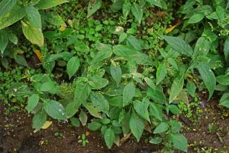

Chiretta

| safety: | ★★★★ |
| traditional use: | ★★★★ |
| research: | ★★★ |
| distribution: | India |
| objected symptom: | poor immune system, liver and digestive problems |
Use
Chiretta stimulates the digestion and helps to normalize blood sugar,
which makes it useful for diabetics. Studies with animals suggest that
this herb reduces the sugar levels only when they are high, which lowers
the risk of hypoglycemia. The bitterness of the herb stimulates saliva
and gastric juices, which help stop nausea, bloating, indigestion and hiccups.
It is also used for fever and to rid the body of parasites. It is a tonic for the heart,
liver and eyes, and can be useful to relieve sciatica, cough, scanty urine and melancholia.
Chiretta is used as a preventative measure for malaria during epidemics.
It is given as a tonic to people convalescing from a long illness.
It is a blood purifier, and can prevent edema. This herb can also be used during
bouts of hysteria or convulsions as a calming herbal remedy. It is also very effective
for reducing the intensity of gastric ulcers. This herb is antimicrobial.
Studies are underway to see if this herb continues to offer a reduction in cancer
cells when taken to fight cancer.
Dosing
Due to its bitterness, chiretta is most commonly taken as a tincture, although it can be taken as an
infusion to stimulate the digestion. A common dosage is 2 to 5 ml of tincture taken per day.
If you take capsules, 1 to 2 capsules of 500 mg each should be taken in the morning on an empty stomach.
If you are using a commercial preparation, follow the directions on the label or as directed by your care provider.
Side Effects
Contact dermatitis is the most commonly reported side effect.
|